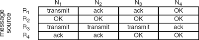

Networking Security Networking Security Networking Security Security Networking Security Networking Security Networking Charlie Kaufman Radia Perlman Mike Speciner Prentice Hall Network Security: Private Communication in a Public World, Second Edition
24.8. Network Denial of Service
The scheme in this section has not been commercially deployed, but it is being built on an experimental basis. It was devised by Radia Perlman and written up in [PERL88].
Routing in today's networks depends on the cooperation of all the routers. If a router were to generate confusing routing messages, or simply flood the network with enough garbage data to saturate the links, it can make a network inoperative. To some extent a network can be designed so that pieces are reasonably independent. For instance in a hierarchical network, although a rogue router in one piece can disable that piece of the network, if routing is properly designed the disruption will remain in that one section of the network. Some routing protocols are being enhanced with authentication information to ensure that only routing messages from authorized routers are accepted. However, such a network would still be disabled by a saboteur corrupting a legitimate router.
A fail-stop failure is one in which a computer is working perfectly one moment and then reverts instantaneously to halting. In real life, failures are not usually so civilized. Often a node starts acting erratically due to software failure, hardware failure, or misconfiguration. Without the help of saboteurs, many of today's networks have suffered collapse due to a sick node. It is only a matter of time before the vandals that have delighted in designing and deploying viruses expand their exploits into network sabotage.
But it is possible to design a network that will continue to function even when being attacked by saboteurs. Our scheme will guarantee that two nodes will be able to converse provided that some path of properly functioning routers and links connects the two nodes. (If no such path exists, then there is no scheme that could possibly work.) So with this scheme, a network can operate properly even with several corrupted routes.
The first part of the scheme involves robust broadcast, in which each message generated by a router is delivered to all the other routers. The robust broadcast mechanism will be used to distribute public key information for all the routers, so that routers need to start out knowing only a single public key. It will also be used to distribute routing information. The second part of the robust network design involves robust data packet delivery, in which a message generated by a node is delivered only to the specified destination.
24.8.1. Robust Broadcast
Flooding is a simple routing mechanism in which a router that receives a message forwards the message on each link except the one from which the message was received. Flooding has the basic property we wantÂa message is guaranteed to get delivered as long as at least one properly functioning path existsÂbut with one serious problem. Flooding will only work if we assume that the routers have infinite storage for buffered messages and the links have infinite bandwidth. Few networks have such characteristics, so simple flooding will not solve our problem.
The basic idea behind robust broadcast is that each router guarantees a fraction of its memory and bandwidth resources to each other router. Each router keeps a database of messages to be forwarded and reserves a portion of the database, say one buffer, for each other router. The messages are transmitted over each link, round robin, so each router's message will have a chance to be delivered over each link.
How do we ensure that the buffer reserved for a given router will be holding a message generated by that router? We do that with public key signatures. Each router signs each message it generates, and only a message with a valid signature can occupy a buffer.
How do we ensure that it is the most recently generated message from a router that occupies the buffer? We do that by using a sequence number. Let's say router R1 receives a message with source R2, a valid signature, and a higher sequence number than the message stored for R2. Then R1 overwrites the message it had for R2.
How does R1 know R2's public key, so that R1 can verify R2's signature? We could use a standard off-line CA. Each router would know the public key of the CA. Each router could include its certificate in each message. But that would make revocation difficult. Another possibility is to have the CA on-line, and have the CA generate and broadcast a list of nodes and public keys whenever the list changes.
What happens if node R2 is malfunctioning and generates a message with the highest possible sequence number (assuming the sequence number is a finite-sized field)? In that case, R2 cannot generate any more messages until it gets a new public key and registers that new public key with the CA. At that point, R2 can start over again with sequence number 1.
For efficiency, it would be nice to stop transmitting a particular message over a particular link once the neighbor on that link has received the message. This is done by marking each message in the database with an indication, for each neighbor, specifying whether that message needs to be transmitted to that neighbor or whether an acknowledgment for that message needs to be transmitted to that neighbor. When a message (with valid signature and new sequence number) with source R2 is received by R1 from neighbor N, R1 stores the message in the database, marking it as needing to be acknowledged to N, and needing to be transmitted to all the other neighbors. If a duplicate message is received from neighbor N, then that message is marked as needing to be acknowledged to N (and not needing to be transmitted to N). If an acknowledgment for a message is received from neighbor N, that message is marked as not needing to be transmitted or acknowledged to N. When the link to N is available, the next marked message is transmitted, while the database is traversed in round-robin order. If the message is marked as needing to be transmitted, then the message is transmitted. If the message is marked as needing to be acknowledged, then an acknowledgment for that message is transmitted to N.
The following table shows a database with messages from four different sources: R1, R2, R3, and R4. The node keeping this database has four neighbors: N1, N2, N3, and N4. Each message is marked, for each neighbor, with transmit if the message needs to be transmitted to that neighbor, ack if an acknowledgment needs to be sent, or OK if neither needs to be sent. The database is scanned round robin per link, and messages are transmitted as marked.

24.8.2. Robust Packet Delivery
Now we know how to robustly broadcast messages. We could use broadcast for delivery of data messages, but it would be inefficient. Instead we will use the robust broadcast mechanism to reliably deliver routing information, and use the routing information to compute routes. Once a route is computed, it is set up with a special cryptographically protected route setup packet, but then data packets can be forwarded without any cryptographic overhead.
The type of routing protocol we will use is known as a link state protocol. In a link state protocol, each router is responsible for figuring out who its neighbors are and generating a packet known as a link state packet (LSP), which gives the identity of the source router and the list of neighbors of that router. Each LSP is broadcast to all the other routers, and each router is responsible for maintaining a database of the most recently generated LSP from each other router. Given this database, it is possible to efficiently compute routes. For details on routing protocols, see [PERL99].
Now assume that source S computes a path to destination D. Assume S is lucky enough to compute a properly functioning path (all the routers and links along the path are working properly). S transmits a special route setup packet, cryptographically signed and with a sequence number, that causes all the routers along the path to remember, for source/destination pair S/D, from which link they should expect to receive packets and to which link they should forward packets. The route setup packet has a sequence number, and a router R is only required to remember the highest numbered route from S to D. With that rule, we bound the maximum number of routes a router will need to maintain to n2, where n is the number of nodes. In practice, it would probably suffice to have a router remember some much smaller number of routes; if a router were asked to remember a route when it had run out of resources, it could complain and force the source to generate a route which did not include that router.
In conventional route setup, a router only needs to remember the outbound link for a particular source/destination pair. We are requiring the router to also remember the link from which it should expect to receive packets for that source/destination pair. If a router checks to make sure that a packet was received from the proper link, then as long as the source was lucky enough to choose a properly functioning path, there is nothing a node off the path can do to disrupt communication on that path. And data packets do not need to be cryptographically protected.
If S is not lucky enough to choose a correct path, it has a complete map of the network, and can therefore choose an alternate path. There isn't any completely satisfactory way of doing this, since there are an exponential number of possible paths between any pair of nodes. But in practice, since there are unlikely to be more than one or two corrupted routers, a source can start getting suspicious of routers that appear on paths that don't work, and avoid them. And in the worst case, if a source were to try a lot of paths, it could revert to broadcasting the packet, which would guarantee delivery provided any path exists.
We were vague about the difference between a node and a router. It is possible to only have the routers participate in the cryptographic protection, and have each router generate and sign route setup packets on behalf of the endnodes serviced by that router.
 |